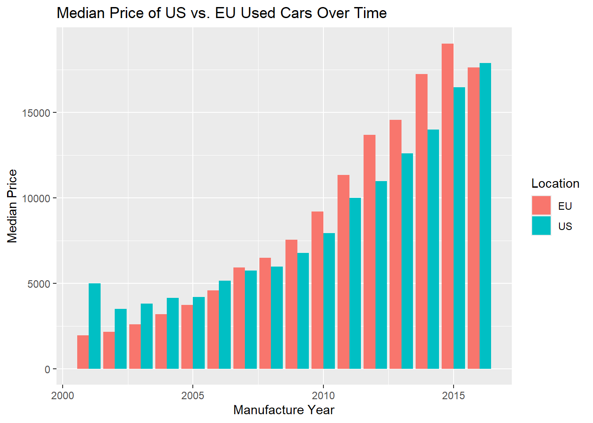

The US and EU Used Car Markets
Background Information
“A car (or automobile) is a wheeled motor vehicle that is used for transportation. Most definitions of cars say that they run primarily on roads, seat one to eight people, have four wheels, and mainly transport people instead of goods. The year 1886 is regarded as the birth year of the car, when German inventor Carl Benz patented his Benz Patent-Motorwagen. The car is considered an essential part of the developed economy” (Anusha Bellam).
In 2017, Carsten Bin Salman, daughter of the crown prince of Saudi Arabia Mohammad Bin Salman, was just old enough to get her drivers license, but was banned under Saudi Arabian law (women were not permitted to drive until 2018).
Carsten decided that Germany and the United States were the best countries for her to move to, as they have a fruitful history of automotive vehicles and gender rights. However, being excommunicated from the Saudi Arabian royal family, Carsten is shopping on a budget. She also has very specific criteria for choosing the perfect 4-wheeled motor vehicle for her transportation. This car is such a crucial possession in her life that she will decide where to move to based on where she can find the perfect car to purchase.
Price
Carsten lost her entire trust fund when she was exiled from the Bin Salman clan, so car price is one of her biggest concerns. More importantly, she is extremely concerned about safety, and thus she only wants cars that are newer than 10 years old. We have done the dirty work for her, and made a bar chart to compare prices in the US and EU over time.
After pouring over this information for hours, Cartsen decided that the US has more affordable used car prices. Although newer cars tend to have higher prices, the US has consistently had significantly cheaper used cars. She hasn’t fully decided which country, but this does give the US a competitive advantage.
Brand
Carsten is also partial to French cars due to her quirky and fun personality and the quirky features seen on cars made by companies such as Citröen, Peugeot, and Renault. However, she also loves the reliability seen in Japanese cars, and the size of American cars. French cars are not sold in the US, whereas Japanese cars are sold on both continents, thus confounding her decision.
This treemap shows the most common car brands in US vs the EU. The most popular car brands in the EU are Volkswagen, Opel, Skoda, and Ford respectively, whereas the most popular brands in the US are Ford, Toyota, Jeep, and Hyundai. Carsten knows the most reliable and appealing brands for her are Subaru, Toyota, Renault, and Peugeot. This chart shows that there are no used Renault or Peugeot cars in the United States, but they take up a significant portion of the German used car market. On the other hand, there are no used Subaru cars in the German market but Toyota has a decent number of vehicles in the country, but Toyota and Subaru both are extremely prevalent in the United States used car market.
Transmission
Carsten also noted that she has never learned to drive a manual transmission vehicle, and doesn’t feel like learning now. Therefore, she would greatly prefer an automatic transmission vehicle. Additionally, she wants to live in a hilly and/or mountainous area, in which driving a manual transmission is much more challenging and demanding. As seen in this graph, automatic transmissions are much more prevalent in the US, whereas manuals are more prevalent in Europe. However, both countries have options with both types of transmissions. This is a very tricky spot to be in because Carsten may not be able to find an automatic car that also fits her price range and brand requirements.
Horsepower
Although Carsten is a very practical person, she also enjoys having fun. She often falls asleep to the sound of engines revving, and dreams about street racing if she is ever allowed to have a license. In fact, on one of her trips abroad to the Abu Dhabi Grand Prix, she was able to partake in an F1 themed go-kart racing championship and confirmed her love of motorsport. Therefore, she wishes her vehicle to have as much horsepower as possible in order to have the ultimate driving experience each day she is behind the wheel.
Based on this graph, we can see that more cars in the US have higher horepower when compared to the EU. Although used US cars are cheaper, they have more horsepower!

Based on all these data, Carsten has decided that the US fits her bill the most in terms of which type of car she would like to buy. First, US cars were cheaper, second, she is still able to buy a Japanese car in the US, third, she has greater access to automatic transmission vehicles, and finally, cars sold in the US tend to have higher horsepower. Unfortunately she will have to abandon her love for French cars with this decision, but will be rewarded with the thrill of street racing, and the feeling of American pride flowing through her veins.
Sources: https://www.kaggle.com/datasets/anushabellam/cars-cars-2 (For the quote at the beginning of the paper)
https://www.kaggle.com/datasets/mirosval/personal-cars-classifieds
https://www.kaggle.com/datasets/ananaymital/us-used-cars-dataset
Ali, S., Alotaibi, R., Field, E., Swanson, K., Vyborny, K., & Daher, C. A. (2021). Two years, Two percent: Why are Saudi women still not driving? Alnahda. https://epod.cid.harvard.edu/sites/default/files/2021-12/AlNahda%20Blog_15Sep2021.pdf
Voelk, T. (2020, March 4). Europe and the U.S. Share a Lot, Except When It Comes to Cars. The New York Times. https://www.nytimes.com/2020/03/04/automobiles/european-us-cars-automakers.html